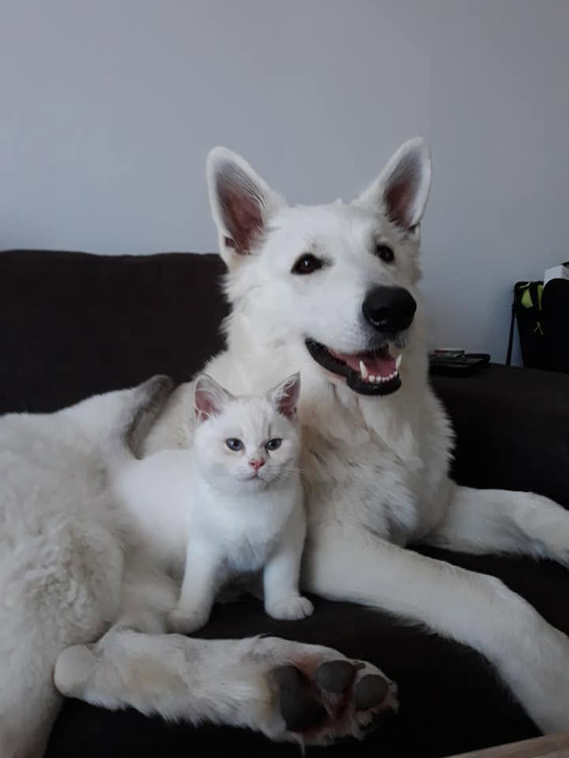

The Conversation Weaver · For founders & leadership teams
Dr Filimena Valkova
Most growth problems are people problems in disguise: decisions that stall, founders who stop agreeing, good people who go quiet. I find what's really getting in the way and help your team fix it, so you can get back to growing the business.
Hello, I'm Phill…
A little about me
Dr Filimena Valkova, MD, but to many friends, patients and colleagues, I'm simply Phill. I'm a philosopher by nature, a healer in spirit, and a curious observer of the patterns that shape our lives.
I notice what repeats between people: the mixed messages, the needs left unspoken, the old patterns quietly appearing in new relationships. I care about people too much to leave those patterns unnamed, and I believe we can speak about difficult things with honesty, warmth and compassion.
That's why I call myself The Conversation Weaver: I gather the loose threads of what's been said, and what hasn't, and help weave them into something your team can act on.
What I mean by Sayable
Sayable
"It's not what you say, it's how you say it."Something I've been saying my whole life
Sayable is the whole art of communication:
- the words you want to say;
- the words you can't yet find, or dare, to say;
- and the words you know you shouldn't say, or need to express differently.
It isn't simply "speak every truth." It's finding the words that make what matters possible to discuss, with courage, care and judgment.
Sayable: finding the words that matter, and knowing what to do with them.
How I can help
How I work with organisations
Communication and team dynamics review
I help teams understand what is getting in the way of working well together. I observe communication patterns, recurring tensions and unspoken assumptions, then give the team a clear, balanced picture of what may be happening beneath the surface.
Who it's for
- Teams where the same friction keeps coming back
- Leaders who sense something is off but can't name it
- Teams that have grown, merged or changed leadership
What it involves
- Observing how the team works together
- Confidential conversations with team members
- A clear, balanced summary shared with the team
Partnership and leadership facilitation
I facilitate structured conversations for co-founders, partners and leadership teams facing conflict, uncertainty or difficult decisions. The aim is to help people understand each other's perspectives, address the issue directly and agree on a workable way forward.
Who it's for
- Co-founders whose working relationship is under strain
- Business partners facing a difficult decision
- Leadership teams stuck in disagreement or uncertainty
What it involves
- Individual conversations before meeting together
- Structured, facilitated sessions
- A clear, agreed way forward
Team communication and working agreements
I help teams develop practical agreements for how they communicate, make decisions, give feedback, share responsibility and raise concerns. These agreements turn good intentions into clearer, more consistent ways of working.
Who it's for
- New or fast-growing teams setting their norms
- Teams where feedback and concerns go unspoken
- Teams unclear on who decides what
What it involves
- Workshops with the whole team
- Agreements written in the team's own words
- A check-in to see how they hold up in practice
Team development and organisational change
I work with leaders and teams to identify what is limiting people's contribution and what would help the organisation develop. Together, we translate those insights into realistic changes that strengthen relationships, build self-awareness and support the team's potential.
Who it's for
- Organisations going through growth or restructuring
- Leaders who want more from their team's potential
- Teams ready for longer-term development
What it involves
- Understanding what holds people back
- Realistic, practical changes agreed together
- Ongoing support as the changes take hold
Special projects
Honestly, some of my favourite work hasn't fitted into any of the boxes on the left.
I've worked in a mental hospital in Vratsa, in Danish clinics, and for the Government of Jersey. I've co-authored research that used neural networks to compare psychiatric treatments. I've trained to run programmes for adults with ADHD and antisocial behaviour, people most services find hard to reach. Wherever I've been, the hard part was never the theory. It was the people.
So if something in your business doesn't fit a neat description, a team that just isn't clicking, a partnership you're not sure about, a talk, an idea you want a second pair of eyes on, tell me about it. If I can help, I'll say so. If I can't, I'll tell you that too.
Tell me about your situationThe experience I bring
After 26 years working with people, I've seen how communication can hold back immense potential, or help it come alive. When something important goes unsaid, people and good ideas can stay stuck. Naming it can be the beginning of change.
My background is in medicine and psychiatry, with work across Bulgaria, Denmark and Jersey, and advanced certification in schema therapy.
LinkedInWhen I'm not working
I have an endless love of life and animals. They have taught me to watch closely, listen beyond words and trust what behaviour reveals.
